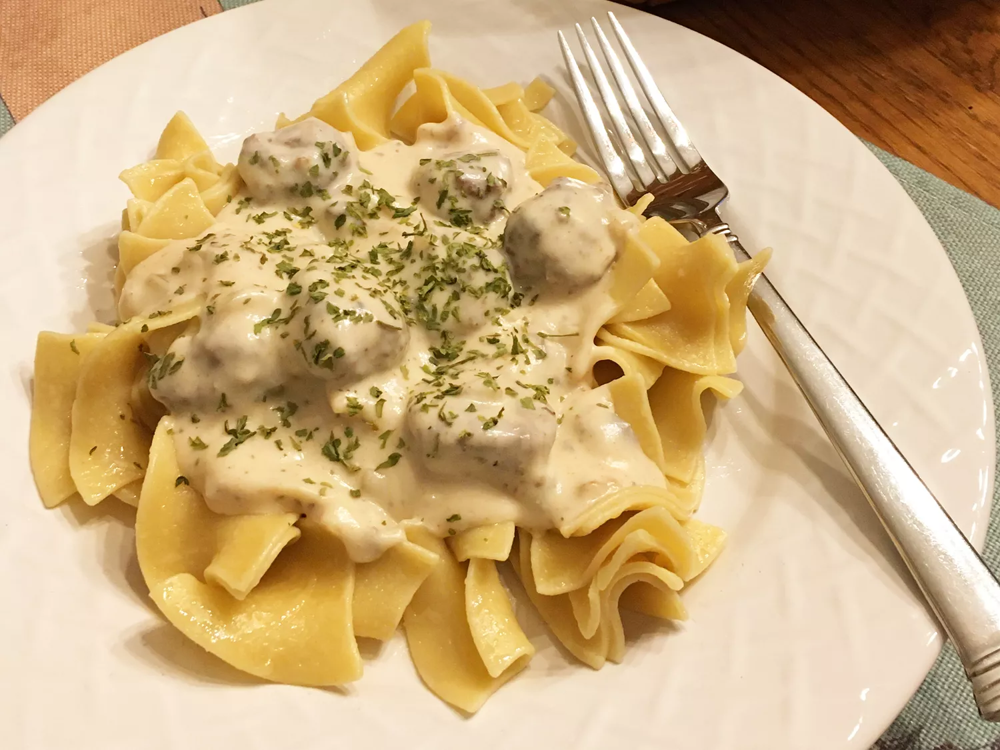

Stroganoff

Description
Stroganoff is an originally Russian dish of sautéed pieces of beef served in a sauce of mustard and sour cream. From its origins in mid-19th-century Russia, it has become popular around the world, with considerable variation from the original recipe. Mushrooms are common in many variants.
Ingredients
- 1 tablespoon vegetable oil
- 1/2 onion, chopped
- 2 teaspoons minced garlic
- 1 (10.5 ounce) can condensed cream of mushroom soup
- 1/2 cup milk
- 1 tablespoon Worcestershire sauce
- 15 frozen beef meatballs, or more to taste
- 8 ounces broad egg white noodles
- 3/4 cup sour cream
- salt and ground black pepper to taste
Steps
- Heat oil in a large skillet over medium-high heat. Add onion and garlic; cook and stir until onion is almost soft, about 3 minutes.
- Reduce heat to medium; stir in condensed soup, milk, and Worcestershire sauce. Add meatballs; reduce heat to low and simmer, covered, until tender, 35 to 40 minutes.
- Meanwhile, bring a large pot of lightly salted water to a boil. Add noodles and cook, stirring occasionally, until tender yet firm to the bite, 10 to 12 minutes; drain.
- Add sour cream, salt, and pepper to meatballs in sauce. Cook until flavors combine, about 2 minutes. Serve meatballs over noodles.